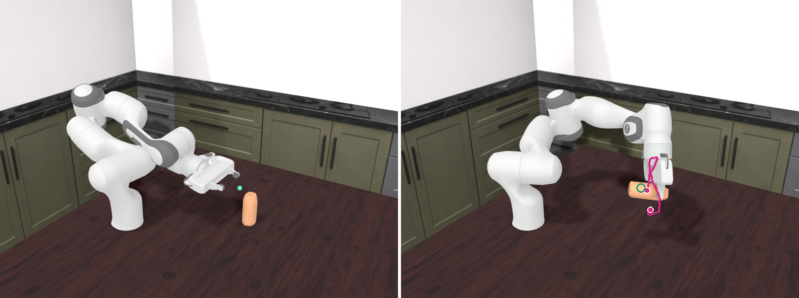

Water bottle, target t0: the pick with the least lift overshoot
Pickup-only checkpoint, guided planner (Adam on the initial noise, shell on, lr 0.1, 10 iterations, population 4; the member with the lowest generated distance, m0). Target = start + (−1.5, +11.9, +15.0) cm. Of the 20 benchmark picks that end within 50 mm of the target in Isaac, this one rises the least above the target height.
22 mmIsaac: object centroid to target, frame 60
+83 mmIsaac: highest point above target height (frame 53)
32 mmGenerated plan: distance to target, frame 60
+90 mmGenerated plan: highest point above target height
126.2 sPlanning time (warm, generation only)
Isaac replay, frame 0Isaac replay, frame 60

Pink line: the bottle's centroid over all 61 frames of the Isaac replay (dots = start and end). Green ring: the target. The line is drawn over the render, so it stays visible behind the bottle and gripper.
Generated planIsaac replay
On the Franka arm. 61 frames at 20 fps = 3.05 s. The small green sphere marks the target. The arm is posed by IK on the replayed hand and tracks it to 2.2 mm / 1.1°.
Generated planIsaac replay
Gripper only, same run and camera.
View: the whole scene (plan, Isaac replay, target) is rotated 180° about the vertical axis through the bottle's start, so the robot stands on the other side of the bottle. This is a rigid rotation, so every distance and height is unchanged. The unrotated renders are isaac_arm.mp4 and isaac.mp4.
Object centroid height relative to the target height
Isaac replaygenerated plantarget height (0 mm)
Run: /data/user_data/mbronars/packages/guided_playback/runs/pickup/cyl_t0_water_bottle_it10 · renders in render_isaac/ and render_isaac_arm/ (m0_guided.gif)